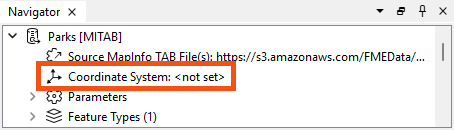
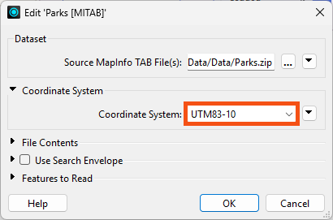
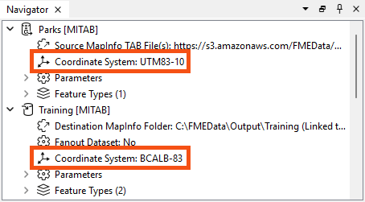
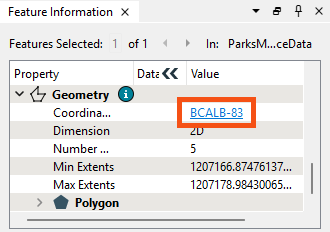

Remember, when a reader’s Coordinate System parameter is defined as <not set>, FME will automatically try to determine the correct coordinate system from the dataset.
After completing this lesson, you’ll be able to:
In this exercise, you work as a GIS analyst for a city government. You work with spatial data consisting of the city's parks' boundaries and some attributes. The data is stored in MapInfo TAB format as polygons (vector data).
The parks team has decided that the output data should be in an Albers Equal Area projection (coordinate system = BCALB-83). They think it will take ages to set this up, but we'll show them differently.
Start FME Workbench 2024.2 and open the starting workspace.
This existing workspace reads in the park data, does some schema editing, filters out dog parks, calculates the park areas and average park areas, and creates a label feature type before writing back to MITAB.
In the Navigator window, locate the Parks [MITAB] reader and expand its list of settings.
Locate the setting labeled ‘Coordinate System.’ The original value should be <not set>:

Double-click the reader Coordinate System parameter to open an edit dialog.
In the Coordinate System field, enter the name UTM83-10 or select it from the Coordinate System Gallery by selecting "More Coordinate Systems..." from the bottom of the drop-down list:

Remember, when a reader’s Coordinate System parameter is defined as <not set>, FME will automatically try to determine the correct coordinate system from the dataset.
Again, the current value should be the default of <not set>.
Double-click the parameter and enter the coordinate system name BCALB-83 or select it from the Coordinate System Gallery by selecting "More Coordinate Systems..." from the bottom of the drop-down list.
The Navigator window will now look like this:

Save and then run the workspace.
In the log file, you should be able to find:
FME Configuration: Source coordinate system for reader MITAB_1[MITAB] set to `UTM83-10' ... FME Configuration: Destination coordinate system set to `BCALB-83'
Inspect the newly reprojected dataset and select a feature. The Feature Information window (under the Geometry section) should report that the data is now in BCALB-83. Optionally, click on the coordinate system name in that window; a new dialog will display all the coordinate system parameters.

If the background map is activated when a dataset is opened, then the contents of that dataset are automatically reprojected to Spherical Mercator to match the background map. If you wish to see the data as it appears in its coordinate system, click on your background map name in the Visual Preview window and select Background Map Off.
Instead of using the reader/writer parameters in the Navigator window, why not try this exercise using the Reprojector (or CSMapReprojector) transformer? Where should the transformer be placed in the workspace? Why is this important?